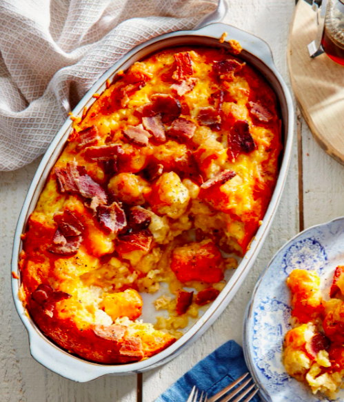

Tator Tot Casserole

This tator tot breakfast casserole will is simple and delicious
This recipe has been used by my family for many years now. It can easily be made with alternate ingreadients or additives depending on your liking.
If you hope to add more richness to the breakfast cassorole feel free to add butter or heavy cream which will help add more heartiness.
Ingredients
- 1 bag of frozen tator tots
- 2 cups of cheese of your choice
- 1 dozen eggs
- 1/2 cup of milk
- 6 ounces of cooked meat of your choosing
- 2 tsp season salt
Steps
- Pour frozen tator tots into 9x13 baking pan
- Mix eggs and milk in a large bowl.
- Add half of the cheese and all the meat
- Pour mixture into 9x13 with tots
- Add the rest of the cheese on top
- Bake for 45 minutes at 350 degrees F
Back to Homepage